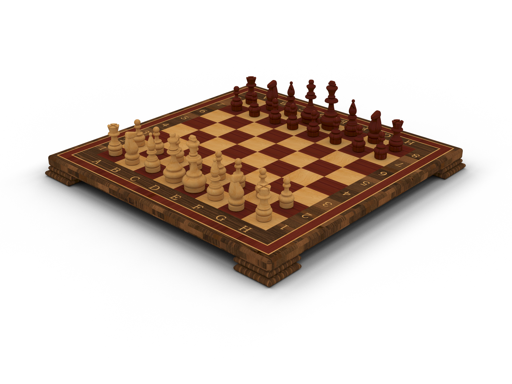
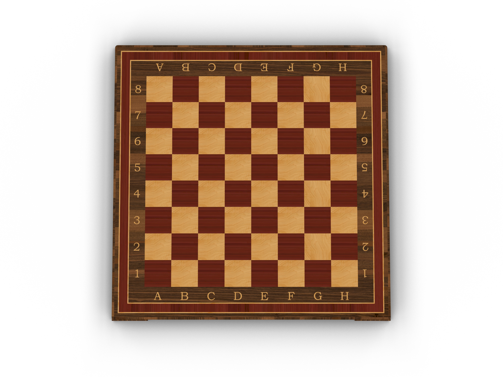
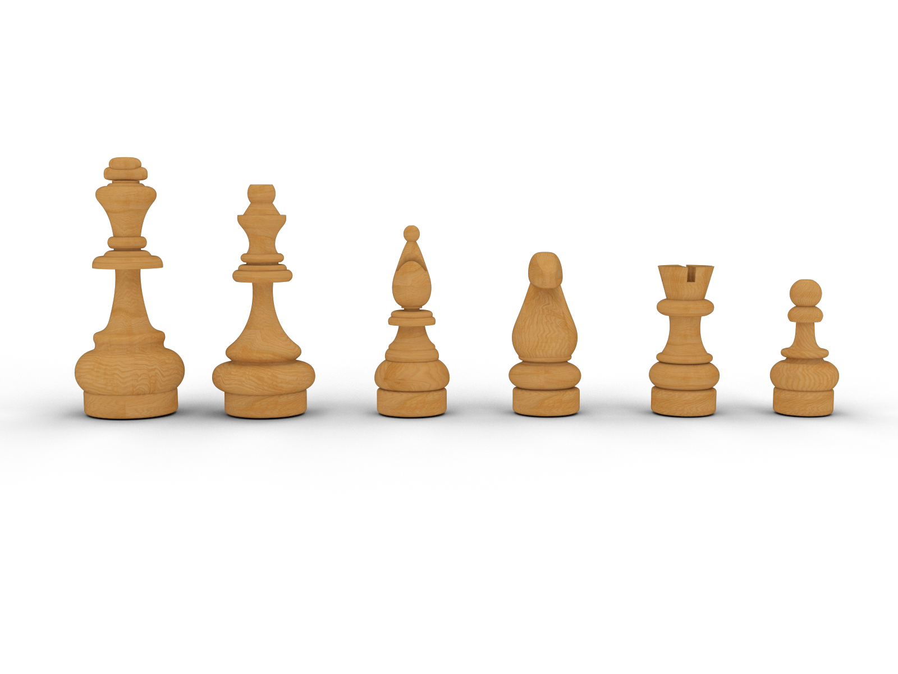
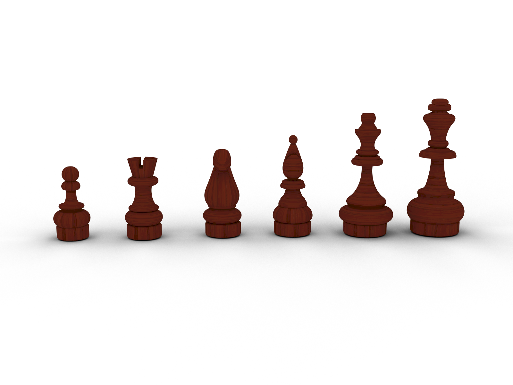
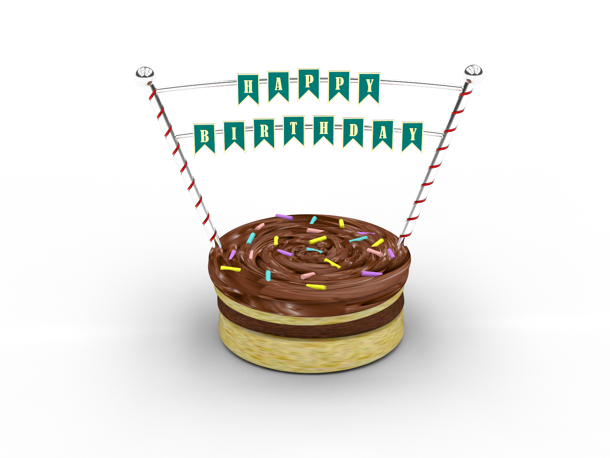
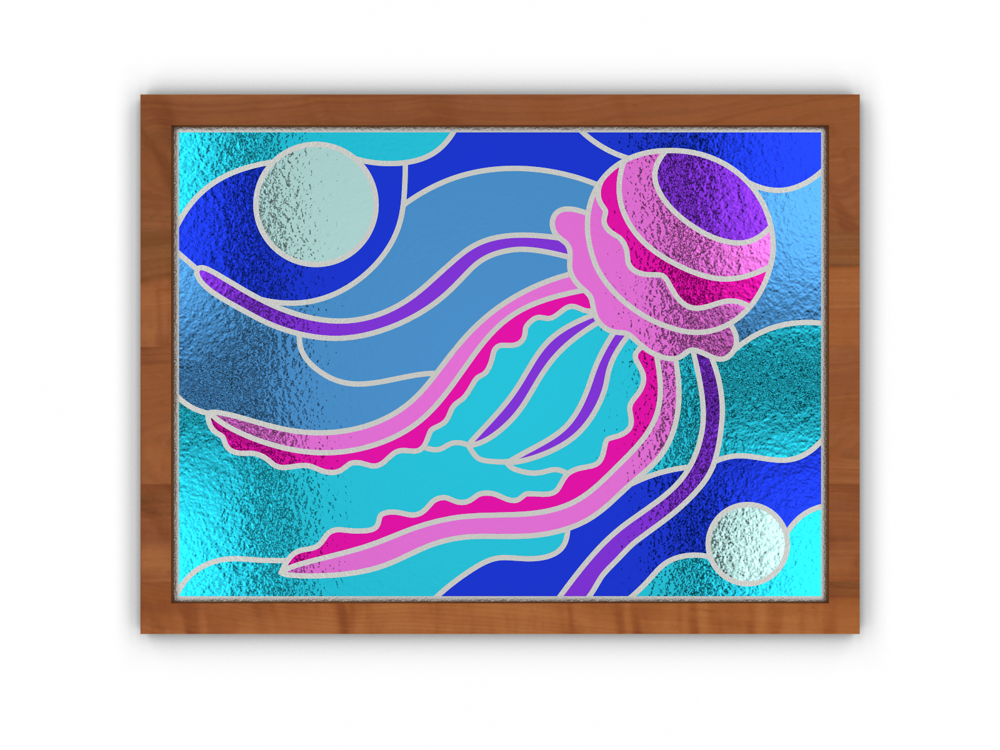

Chess Board
This chess board was my capstone project for the Computer Aided Design (CAD) program with the First Nations Technology Council (FNTC). This project was created with Rhino 8, a 3D modelling program.




Birthday Cake
This birthday cake was one of my assignments for the CAD program. This project was created with Rhino 8.

Jellyfish Stained Glass
This jellyfish stained glass design was one of my assignments for the CAD program. This project was created with Rhino 8.
